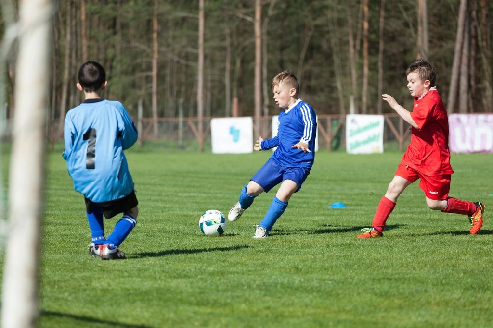
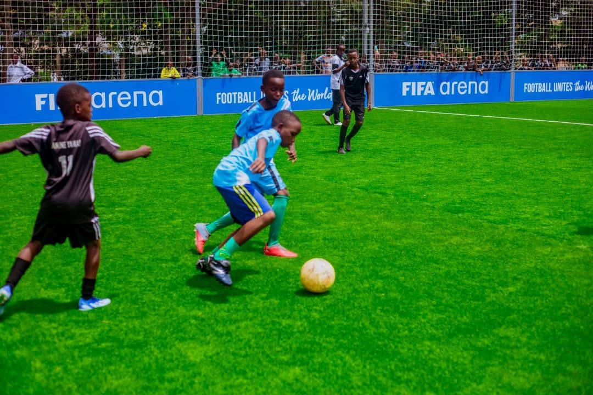

Comparado com a mesma idade
Seu filho é avaliado dentro da própria faixa etária e modalidade.
PKZ · CRIANÇAS E ADOLESCENTES ATLETAS
Preparação física para jovens atletas com avaliação completa, treino planejado mês a mês e um relatório visual que você entende em um minuto.

Seu filho é avaliado dentro da própria faixa etária e modalidade.
O professor confirma a presença do atleta em todo treino.
Evolução em gráficos simples, sem 17 páginas de texto.
Automatizamos processos, não o relacionamento com a família.

SOBRE NÓS
O Henrique trabalha há anos com preparação física de atletas. Começou atendendo de carro e de moto, em clubes e condomínios da Barra, do Recreio e da Zona Sul — até a procura ficar grande demais para rodar a cidade.
Foi aí que nasceu a PKZ: um centro de treinamento pensado para jovens atletas, ao lado do estúdio One to One. Hoje são cerca de 60 atletas treinando com um plano feito sob medida para cada um.
“A tecnologia existe para facilitar — a conexão com o atleta e com a família é o que faz a PKZ ser a PKZ.”
— Henrique, fundador
COMO ACOMPANHAMOS SEU FILHO
Um ciclo simples, que se repete todo mês — e que você acompanha de perto.
Mais de 16 testes físicos no primeiro dia: salto, velocidade, agilidade, tempo de reação e foco.
Com base nos resultados, montamos o ciclo de treinos do mês, sob medida para o atleta.
A cada aula o professor registra o que foi treinado e como o atleta respondeu.
Um mês depois, repetimos os testes e você recebe a evolução em gráficos.
Nada de relatório de 17 páginas. Gráficos simples, comparação com atletas da mesma idade e um recado do professor.
Futebol · Relatório de setembro
Lucas está mais rápido na saída. Próximo mês vamos focar em mudança de direção.
Exemplo ilustrativo de relatório. Dados fictícios.
Atletas treinam e são comparados com quem tem a mesma idade e modalidade.
Laudos e observações (ex.: de fisioterapeuta) são registrados pela equipe e considerados no plano de treino.
Ficou com alguma dúvida sobre o treino? A equipe responde você pelo WhatsApp.
O sistema avisa a equipe quando a reavaliação do seu filho está chegando.
“Pela primeira vez eu entendi o relatório do meu filho. Os gráficos mostram tudo.”
Mãe do Pedro, 11 anos
“Ele chega em casa animado para contar o que treinou. E a equipe sempre responde a gente.”
Pai da Sofia, 13 anos
“Gosto de saber que tem alguém de olho em cada detalhe, inclusive quando é a babá que leva.”
Mãe do Rafael, 9 anos
Depoimentos ilustrativos
Atendemos crianças e adolescentes, sempre avaliados dentro da própria faixa etária.
Não. A PKZ atende quem já compete e quem quer começar a evoluir no esporte.
Todo mês, em formato visual, com gráficos e um comentário do professor.
Escolha um dia no calendário do site e deixe seu nome e telefone. A equipe confirma pelo WhatsApp.
Escolha um dia no calendário, deixe seu nome e telefone — nossa equipe confirma com você.
Escolher dia no calendário →